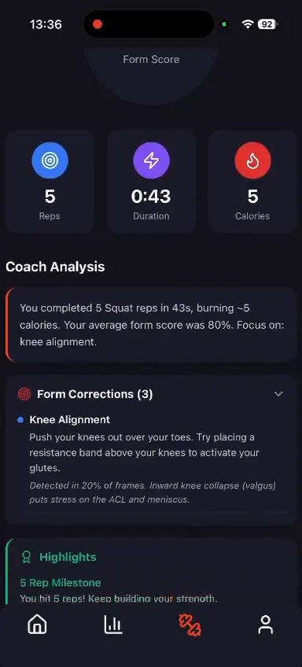
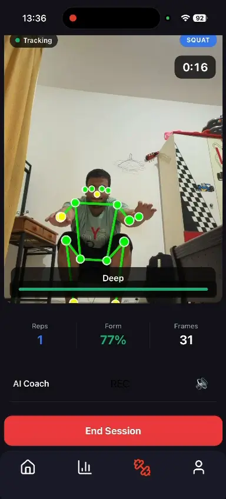
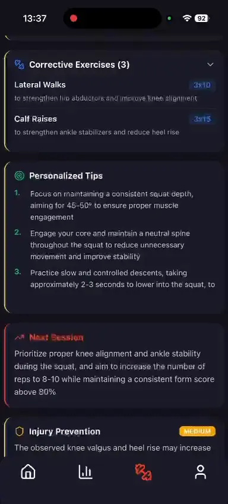

A React Native coach that sees movement, counts reps and speaks form corrections without sending camera data to a server.
- MoveNet’s 17 body keypoints drive squat, push-up and lunge analysis.
- Five lightweight models run beside an authoritative rule pipeline.
- Session-grounded AI reports turn workout data into corrective guidance.
99.1% rep counting792 reps tested58.1k samples



ON DEVICENO CAMERA UPLOAD